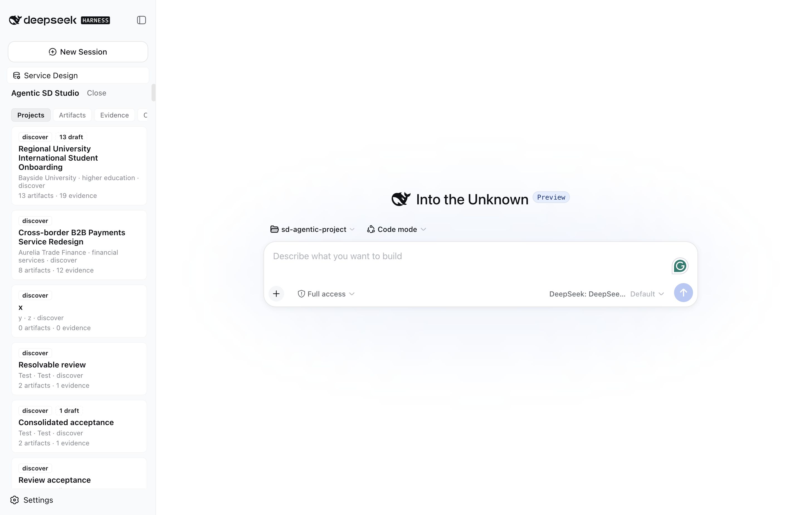
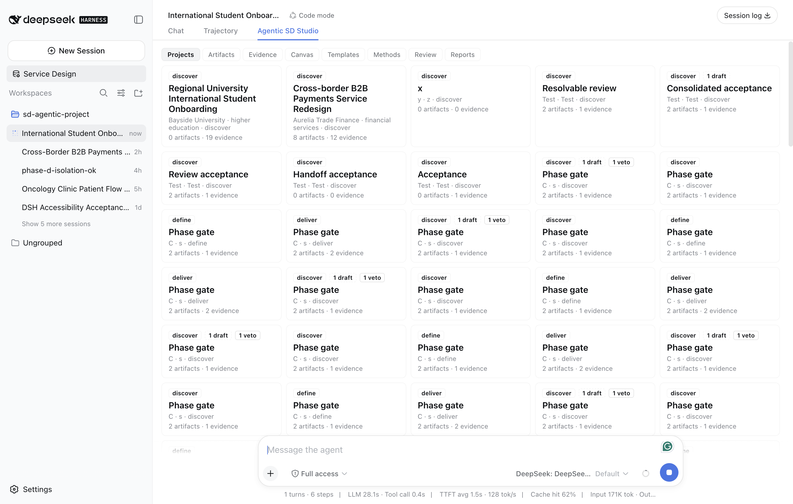
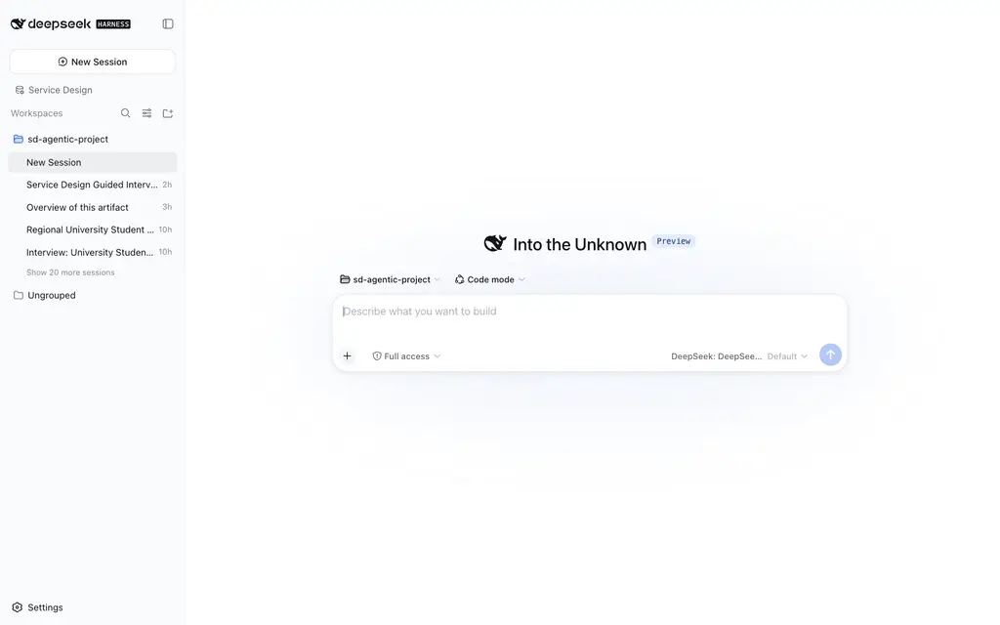
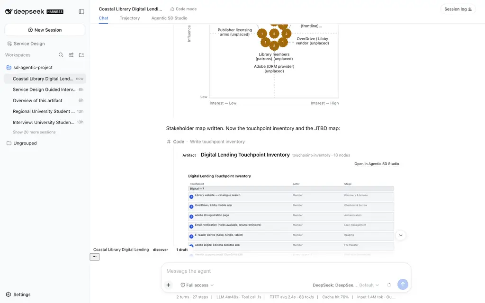

Case study: the ASD Studio in the DeepSeek Harness
This module converts Article 38 — The Center-Tab Studio: Live Service Design Journeys Inside the DeepSeek Harness Shell — into course form. Where modules 04–07 ran the engagement on BUZZ with role runtimes, this case study runs the same store, the same gated write path, and the same human gate from the other side of the platform: a single practitioner in a host shell, driving a real model turn through a workbench UI. It is the deepest host integration of the ASD platform documented to date, and it is the module where the platform's failure modes were probed most aggressively.
The receipts behind everything below are from 2026-08-22 and 2026-08-23: a
live Discover-phase run for a payments project, a live acceptance for an
oncology project, a placement failure and fix, and a studio v2 verification.
The model behind every turn was DeepSeek V4 Flash via OpenRouter; the
host was DeepSeek Harness 0.1.0-rc.5 running the official CLI server; the
Studio was the local @asd/ui 0.5.0 tarball installed with file: — the
public-registry path remains blocked, and the article says so plainly. Both
clients are fictional composites; the tool runs are real.
Learning Objectives
- Explain the host-integration ownership rule: the host owns session, model, layout; the plugin registers slots.
- Diagnose the registration-vs-activation failure class, and why a test can enshrine a bug.
- Read a live model turn's receipts (steps, tokens, refusals) as engagement evidence.
- Recount the two journeys' boundary events: schema rejection, dangling-evidence refusal, empty-approval rejection, same-id critic cycle, exact reload.
- Map the studio v2 surfaces onto the ASD contracts you already know.
Part 1 — The placement failure and fix
Article 36 verified that the Studio installs into the harness. It also left a problem on the table: a full service-design workbench was living in a roughly 320-pixel sidebar activity panel while the center column idled on a hero screen. The owner confirmed it with one screenshot:

Live capture, before (16:14, 2026-08-22) — the DSH shell with the live session: every Studio tab worked, and none of them had room. The workbench — projects grid, evidence register, review board, canvas — rendered inside roughly 320 pixels.
The failure was activation, not registration. The Studio was registered
correctly as a conversation.view entry (id asd-studio, order 20) — but
the composer dock chip's entry point only ever called layout.openActivity(...).
The only surface ever activated was the sidebar panel. Registration is
declarative and easy to verify; the call that activates a surface is
imperative and easy to miss. The Studio was never mis-registered — it was
never asked to appear.
The fix followed the community-plugin pattern: register the view,
activate it by name through the scoped conversation service
(conversation.showView('asd-studio')), and leave the host's layout alone.
On success the sidebar activity is docked with layout.closeActivity(). Any
failure — no current session, an unscoped session, a missing seam — falls
back to the sidebar activity, by design:

Live capture, after (19:20) — the sidebar Service Design button now activates the center tab: the projects grid renders full-width in the center column, and the composer stays resident below it — the move from looking at the work to instructing the model is a shift of the eyes, not a change of window.

Live capture, fallback (19:20) — on a blank session there is no conversation body to host the tab, so the sidebar panel remains the surface. The fallback is a feature, not a residue — on the hero state, the compact surface is the correct one.

Live capture, first light (18:58) — the Studio as a top tab in the center column: Chat, Trajectory, Agentic SD Studio, with the full workbench at width. The canvas viewport moved from a fixed 420 pixels to min(62vh, 640px) with a responsive floor.
The lesson that generalizes: when a plugin's surface feels broken, check
activation before composition. And note what the test suite had been doing —
the old layout spec asserted the sidebar-only placement. It enshrined the
cramp: it passed while the product was wrong. The rewritten spec asserts the
center-tab contract, the responsive canvas viewport, and the retained sidebar
fallback; four new open-behavior tests cover the showView path and all three
fallback paths. pnpm -r test: 714 passed, 0 failed across eight
packages. Replacing a wrong contract with the intended one is not "relaxing
a test to fit a change" — it is the change.
Part 2 — Two live journeys
Aurelia (cross-border payments): a real Discover turn
The brief: a mid-size payments provider on the Australia–Singapore SME
corridor, whose clients experience onboarding and first-payment friction as
silence — compliance holds nobody explains, settlement ETAs nobody updates.
The Studio's create-project form drafts the sd_project_create instruction
into the live composer — it never calls a backend; the designer reads it,
edits it if needed, and sends it. Sending started a real model turn. The
receipt's numbers, verbatim: 8 minutes 19 seconds, 36 steps, 96% cache
hit, 3.1M input and 24K output tokens. The session auto-renamed itself to
"Cross-Border B2B Payments Redesign", and every tool call rendered inline —
the 36 steps were inspectable as they ran, not reconstructed afterward.
Mid-turn, the model attempted an ecosystem map whose nodes carried value
and direction fields. The closed kind schema rejected the write with
per-field errors; the model read them and adapted in the same turn. The
failure surfaced in the conversation, not in a retry loop. The turn ended
where it should — at the human:

Live capture (16:14) — the Aurelia Discover gate report: four artifacts (all critic-passed), a twelve-row evidence register (6 quotes, 4 telemetry, 2 document extracts from 4 sources), the findings — and the contract sentence: "To approve, I need your explicit approval (receipt ID, name, rationale) per the phase-gate contract." The gate was not advanced.
Meridian (oncology): the acceptance run
The second project — outpatient chemotherapy across three clinics, where the infusion day runs late and chair-utilization data says nothing about waiting experience — was the live acceptance surface. Every persisted record was counted, refused, vetoed, remediated, reloaded, and re-counted:
- The fabricated-evidence probe. Prompted — deliberately — to write an artifact citing
ev-fabricated-0000-deadbeef, the write came back a ToolCallError: node "n1" cites evidence "ev-fabricated-0000-deadbeef" which is not in the project evidence store. The model added real evidence, asked how to proceed, and rewrote the artifact against the real content-addressed id. The resulting insight persisted as a draft — exactly what an unreviewed artifact should be. A tool that silently "fixed" the citation would have produced a cleaner transcript and a worse system. - The critic cycle, on the same artifact id. The journey map was vetoed (3 defect rows), remediated in place with cited evidence, and passed; the accumulated review-veto-log — linked to its target by
reviewOf— persisted as a final artifact in its own right. Sound familiar? It is the module 06 loop, run by a model turn inside a host shell instead of a CLI. - The gate holds against its own operator. An approval with an empty
approvedBywas rejected — approvalReceipt.approvedBy must be a non-empty string — and the rejection recorded as a gate audit. The closing gate panel read: factcheck passing, phase discover, 1 final, 24 draft, 0 veto — automatic advance blocked. - Reload is the demo. Pre-reload counts: 26 artifacts, 15 evidence records, 26 review rows, 2 canvases. After a full browser reload the counts matched exactly (
exactMatch: true); after a server restart, everything reloaded from disk unchanged; a fresh New Session showed no transcript leakage; and invalid-input probes (dangling evidence reference, unknown method id, malformed nodes argument) were all rejected with project counts untouched.
flowchart LR
A["Studio form · client brief"] --> B["Draft sd_project_create into live composer"]
B --> C["Model turn · visible tool calls"]
C --> D["Artifact writes through acceptance rules"]
D --> E{"Critic verdict"}
E -->|veto| C
E -->|pass| F["Final artifacts · factcheck"]
F --> G{"Human phase gate"}
G -->|explicit approval| H["Phase advances"]
G -->|anything else| I["Gate holds · audit recorded"]
The results table
| Measure | Observed |
|---|---|
| Discover turn (Aurelia) | 8m19s, 36 steps, 96% cache hit, 3.1M in / 24K out tokens |
| Artifacts produced (Aurelia) | 4, all critic-passed |
| Evidence rows (Aurelia) | 12 from 4 sources |
| Artifacts persisted (Meridian) | 26 — 25 design artifacts plus 1 review-veto-log |
| Evidence records (Meridian) | 15 (7 quote, 5 telemetry, 3 document) |
| Journey checkpoints captured (Meridian) | 29, each with a screenshot and a proof statement |
| Refusals surfaced | 3 — closed schema, dangling evidence id, empty gate approval |
| Critic veto cycles | 1 — veto, same-id remediation, pass, final |
| Reload count mismatch | 0 (exact match after reload and after server restart) |
| Unevidenced nodes in final artifacts | 0 |
| Phases advanced without human approval | 0 |
As with every article in this series, no business outcome is claimed — the clients are fictional, and a fabricated "onboarding drop-off fell 22%" would be the precise failure the gated write path exists to prevent. What is measured is the process, from the receipts.
Part 3 — The interview loop
The interaction model the article kept circling arrived last: selecting a template or method in the Studio starts a guided interview in the chat. The drafted instruction tells the model to review existing project evidence first, ask the practitioner focused questions one at a time, and only then write the artifact, run the critic, and report the verdict — with a hard guard requiring at least three answered questions before any artifact is created. Live acceptance ran every template and a method spread one by one in the browser: all six templates (journey map, ecosystem map, insight register, persona set, service blueprint, stakeholder map) and three methods across research, synthesis, and delivery phases opened their interview with a question — and one journey-map interview ran five question rounds to a critic verdict.
Part 4 — Studio v2: four new surfaces, six new kinds
The day after the placement fix, the Studio grew the four surfaces the
center-tab posture made obvious (2026-08-23, fresh disposable profile, same
rc.5 host, build tip 822bc16):

Live capture (studio v2) — the v2 build booted clean in a fresh disposable profile: the hero with the starter-brief draft already in the composer. New projects land in briefed — the lifecycle starts at the brief, not mid-flight.
- A Kanban for engagements. Projects now carry a lifecycle status — briefed, active, gated, blocked, archived — as a first-class domain field with its own capability (
sd_project_status_set, the 30th canonical tool) and transition rules enforced on the write path. Both drag and keyboard move paths execute the capability mutation, never a direct write; a WIP budget watches the Active column. - A Library for the knowledge base. The corpus the model reads (20 books, 38 articles, 7 authored templates, 80 methods — 227 resources) became a human surface: shelves by source, chapter panes, one search box, and a Use in project action that drafts a provenance-cited librarian instruction into the composer — the same draft-never-send posture as the create form.
- A canvas workspace. Side-by-side compare, an evidence spotlight rail mapping every node to the records it cites, SVG/PNG export, fullscreen presentation, explicit zoom. Authoring stays model-mediated; the workspace is for review.
- A composer that knows the project. The input dock chip reads the engagement — name, phase, gate state, draft count — with Project-actions that draft phase-aware next-step or gate-report instructions.

Live capture (studio v2) — the Kanban board: five lifecycle columns (Briefed 1, Active 4 with a WIP 4/5 budget, Gated, Blocked, Archived), cards with phase and draft badges, drag handles and Move-to menus that execute the status capability.

Live capture (studio v2) — the canvas workspace: compare/export/fullscreen toolbar and the evidence spotlight rail mapping every node to the quote, telemetry, and document records it cites — module 05's verification discipline, as a UI surface.
The artifact-kind registry grew from 32 to 38 — jobs-to-be-done, day-in-the-life, touchpoint-inventory, service-scenario, expectation-map, actor-network-map — each with a closed schema, a deterministic renderer, a method manifest, and (for JTBD) a seventh guided template. The live turn wrote two of them through the gated path:

Live capture (studio v2) — the jobs-to-be-done artifact: statement cards grouped functional / emotional / social with outcome and effort lines, evidence badges, and the node-to-evidence cross-reference. New kinds enter through the same gated door as the old ones.
One more receipt line belongs in every integration notebook: the first live boot of the right-panel build failed loudly — the host's details column (the single seat the contract reserves for one occupant) already had the host registration at priority 0 — and the fix was to register at −10, because the lowest rank renders. Activation, not registration, is where takeover seams bite; this module has now shown that twice.
Part 5 — Lessons that travel
- Placement is product design, not plumbing. Assert activation, not registration.
- A test can enshrine the bug. A passing suite that asserts the wrong contract is worse than no suite — it launders the bug as coverage.
- The fallback surface has to be a full citizen. The sidebar panel shares the Studio body with the center tab; on a blank session it is the Studio.
- Honest failures beat silent recoveries. All three refusals — schema, evidence reference, gate approval — arrived as specific, named errors the model or operator could act on.
- Receipts correct narratives. The acceptance receipt itself was reconciled after independent review found drift (a stale HEAD hash, a byte count off by a hundred, a missed evidence record). Corrected numbers come from persisted workspace state, not from the first telling.
- Name the install boundary. A local
file:tarball against rc.5 is "installable"; it is not yet "installable by anyone." Today the Studio is the first. That is a fact to publish, not a detail to omit.
Hands-on lab
- If you run a DSH profile: install the Studio tarball per Course 10, open a blank session, and click the Service Design activity — confirm the sidebar fallback. Start a session, click again, and confirm the center tab. You have just walked both paths of the activation contract.
- Draft a project from the Studio form; read the instruction it places in the composer before sending. Edit one field. Send, and watch the tool calls render inline — count the steps when the turn ends.
- Probe one boundary: ask for an artifact citing a made-up evidence id, and file the exact ToolCallError text. Reload the page and confirm your project counts did not move.
- In any host: find one surface you registered but never explicitly activated. (There is almost always one.)
Key Takeaways
- Host owns session, model, and layout; plugins register slots — additive tabs, not layout fights.
- Activation, not registration, is where integrations break; test the intended contract, not the accidental one.
- The same gated write path (schema → evidence → acceptance → critic → human gate) runs identically behind a UI turn and a CLI command.
- Refusals with named errors are the product; silent recoveries are the failure mode.
- Reload and restart are the persistence demo; counts that match are the claim, receipts are the proof.